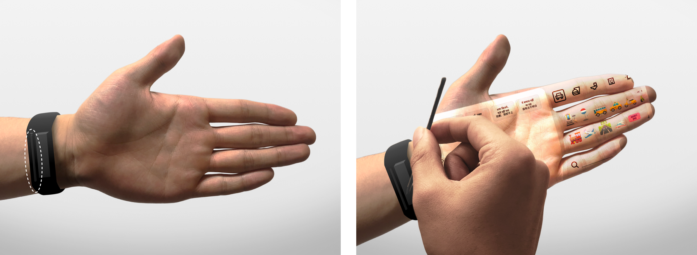
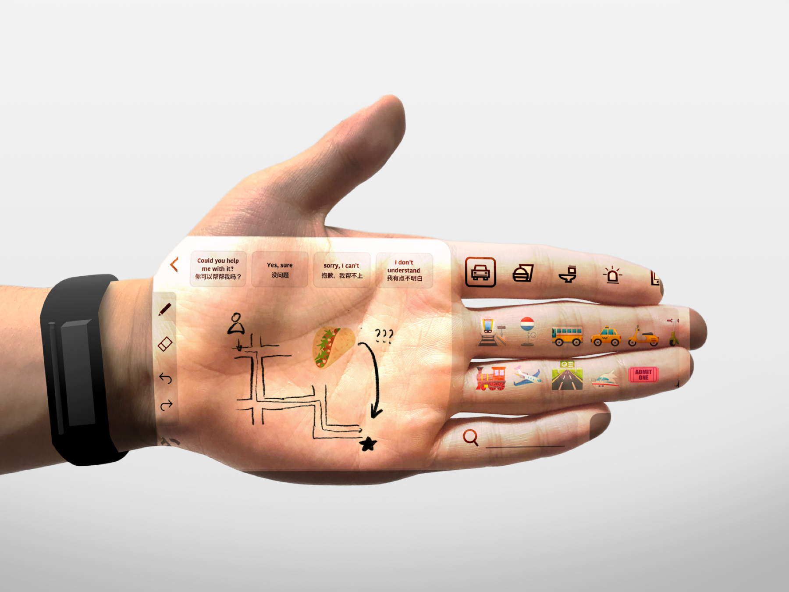
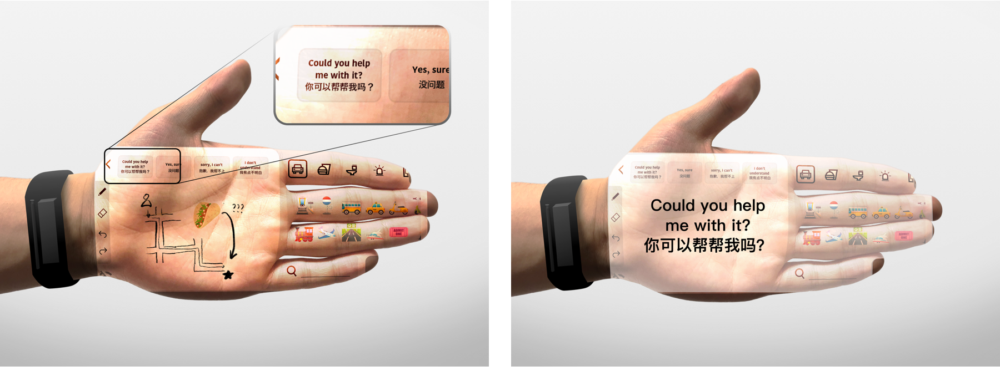
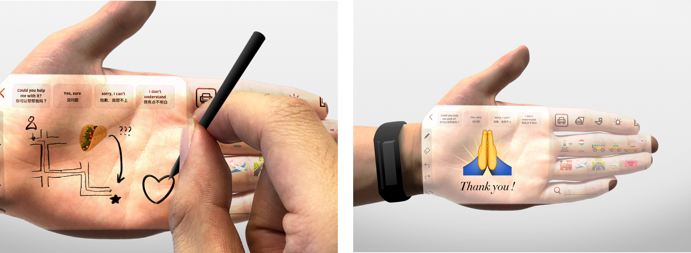

Overview
Traveling to another country is the most common situation for one to experience language barriers, especially while ordering food at a restaurant, inquiring at an airport, asking for directions to a particular place etc. The language barrier often leads to negative emotional experiences such as frustration and embarrassment, failures to carry out a specific task, e.g. ordering food in a restaurant or finding a particular destination.
We designed sketchicon, a miniature interactive projection device for people to communicate by using visual language in the face of a language barrier.
Role & Duration
UX/UI Designer, Oct. 2018 - Jan. 2019
User Research, Interaction Design, Visual Design, Prototyping, Testing
Team Member: Johnny Gong, Priyanka Lakkad, Ankita Tapadia
The problem
Language barriers can sprout even in the simplest travel scenarios. A survey carried out by Hostelworld.com found that 10% of UK adults say language barriers even prevent them from travelling abroad.
“12% of respondents say they got embarrassed trying to speak another language because of the amount of misunderstandings they reported. 21% said they had gotten lost on their travels due to a language barrier, 20% of people said they found it difficult to order food, while 9% had even gotten on the wrong train, bus or even plane.”
Research & Insights
How do people manage to communicate in the face of a language barrier? Most of our interviewees reported using gestures, pointing to stuff, as well as translation APPs. We conducted a survey accordingly.
Initially we thought people would be using google translate in the face of a language barrier. However, our survey results showed that this is not the case. The reasons why people don’t use google translate includes:
To directly observe how people successfully carry out a specific task in the face of a language barrier, we conducted several role-playing scenarios. Participants were required to finish a task (e.g. asking for the direction of the restroom) by asking the other one without speaking their common language. All the participants were able to communicate their needs effectively using visual languages such as pointing and gesturing. Moreover, participants naturally resorted to use sketching as a technique to communicate whenever a medium (e.g. whiteboard) was available.
However, even though visual language is proven to be a universal language to overcome language barrier, we found that validation of certain information were difficult using visual communication. For instance, one participant was trying to convey “Sorry, I don’t know the answer” by waving her hand. Even though the other participant interpreted the message correctly at the end, she reported that at the moment she thinking was it ”I don’t understand”.
Based on our insights, we then questioned ourselves “How might we provide travellers a medium to sketch and use visual language to communicatefor to communicate and validate information in the face of the language barrier?”
Ideation & Prototyping
We first quickly prototyped our concept thinking of promoting all kinds of visual communication. Except for gestures and universal words (e.g. 👍 for positive response), we tried to integrate tools people can use to point, sketch and validate information. Exemplar studies on ICONSPEAK T-shirt and Point to What You Want inspired us on how we can use commonly understood icons (e.g. emoji) as a powerful tool for people to point. It also helps people who are less good at drawing to quickly convey their idea. These exemplar studies again prove the effectivenss of visual communication in the face of language barrier.
To quickly test the our concept of promoting overall visual communication, we assembled a sketch board using a small whiteboard (size of a hand) with text message to validate information and icons to facilitate pointing as well as sketching.
Considering the travel scenario, we intended to improve the portability of the device. We explored the objects carried by travellers to identify if we can integrate the medium into them. Accidentally we found using hand as the medium to draw effective and efficient in an unplanned conversation. Additionally, passing a pen to the other person naturally conveys the message that it's the time for him/her to draw. Participants also reported that using their hands to touch the other person's palm makes them a bit uncomfortable especailly when they are strangers. We then integrated the concept of using a stylus to our design.
Iteration: Survey & Card Sorting
To better arrange the icons/symbols people would use in visual communication, we did a survey asking participants about "In what kind of situation you had to communicate with people around you (to get help) whentraveling abroad?" and "Regarding the options you selected above, in what kind of situation you were in face of a language barrier?". We also conducted a card sorting session asking people to select the icons that they think will be frequently used while traveling abroad.
Final Design
Sketchicon is a miniature interactive projection device. By removing the stretchable stylus, users open up a new drawing canvas on his/her palm. Users can either use preset icons or sketch to facilitate communication.
  To validate essential information which might not easily be conveyed through visual communication, the user is offered the bilingual options that s/he can tap on. A magnified message of the information to verify will show up accordingly.

At the end of the interaction, the user can draw a shape of a heart to show his/her gratefulness. The device detects the drawing of a heart and shows an appreciation message on the projection.